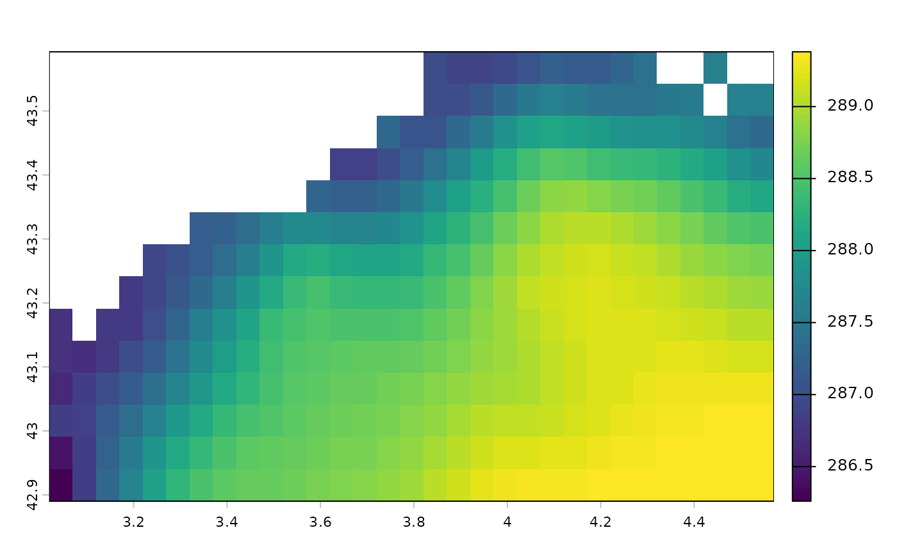

vignettes/data_load_corpernicus.Rmd
data_load_corpernicus.RmdThis is an optional function to import data from the
Copernicus Marine
Data Store some dataset. This
function uses the CopernicusMarine Python library. A virtual Python
environment is automatically created to enable it to run in R. If Python
is not already installed on your computer,
BEE.data.load_copernicus will download it for you.
This allows you to copy and paste the Python API generated in the
copernicus website (Data access>select your data and ONLY one
variable> Automate> Python API) almost directly as argument of the
BioExtremeEvent::BEE.data.load_copernicus() function.
To fulfil the argument of the BioExtremeEvent::BEE.data.load_copernicus() function, you just need to copy and paste the contents of the copernicusmarine.subset function, which is visible in the Python API, into the BioExtremeEvent function. 1. To access the API code, go on the Copernicus Marine Data Store page of the selected products > Data access > in the colonne ‘Subset’ clic on ‘Form’ > select only one variable > select your area of interest and your date range > on the top of the webpage clic on Automate > copy/paste whats inside the brakets of the copernicusmarine.subset() function. 2. Then, add three arguments in BEE.data.load_copernicus() : - username: wich is your username from the Copernicus Marine Data Store. - password: your Copernicus Marine Data Store passeword. - output_directory: The path where you want to store your dataset. You can now run the function.
BioExtremeEvent::BEE.data.load_copernicus(
username = my_user_name, # In addition of the API copy&paste
password = my_password, # In addition of the API copy&paste
dataset_id = "cmems_SST_MED_SST_L4_REP_OBSERVATIONS_010_021",
dataset_version = "202411",
variables = "analysed_sst", # Select only one variable !
minimum_longitude = 2.9, # Use the "draw on map" option form the website
# to fill the GPS coordinates
maximum_longitude = 7.8,
minimum_latitude = 42,
maximum_latitude = 43.7,
start_datetime = "1982-01-01T00:00:00", # Use the 'Date range' settings
end_datetime = "2024-12-31T00:00:00",
coordinates_selection_method = "strict-inside",
disable_progress_bar = TRUE,
output_directory = here::here("Data") # In addition of the API copy&paste
)You obtained a spatraster with one layer per time step in your R environment, the same dataset is saved in your computer at the location indicated by output_directory.
# Load the exemple dataset in R environement :
file_name <- system.file(file.path("extdata", "copernicus_example_data.nc"), package = "BioExtremeEvent")
copernicus_data <- terra::rast(file_name)
# Plot first layer (Sea surface temperature the first day of the dataset) :
terra::plot(
copernicus_data[[1]],
main = paste("Temperature (Kelvin) in the Gulf of Lion on the", terra::time(copernicus_data[[1]]) ),
xlab = "Longitude (E)",
ylab = "Latitude (N)",
col = terrain.colors(100),
legend = TRUE
)